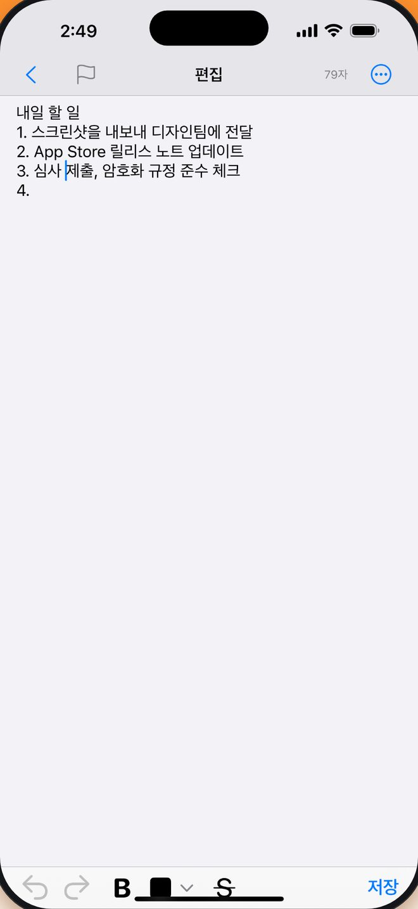
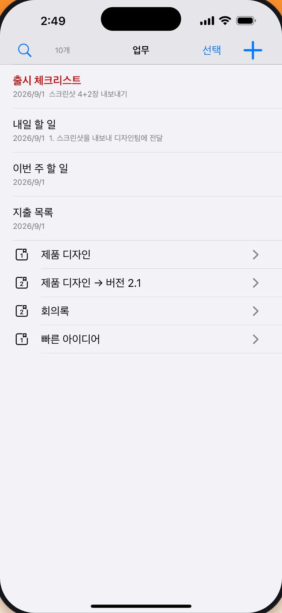
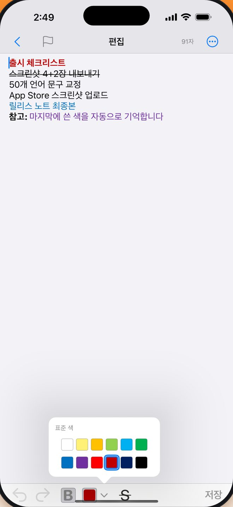
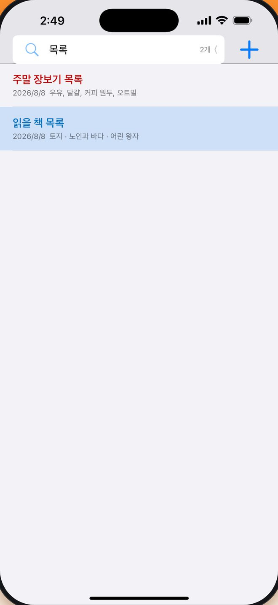
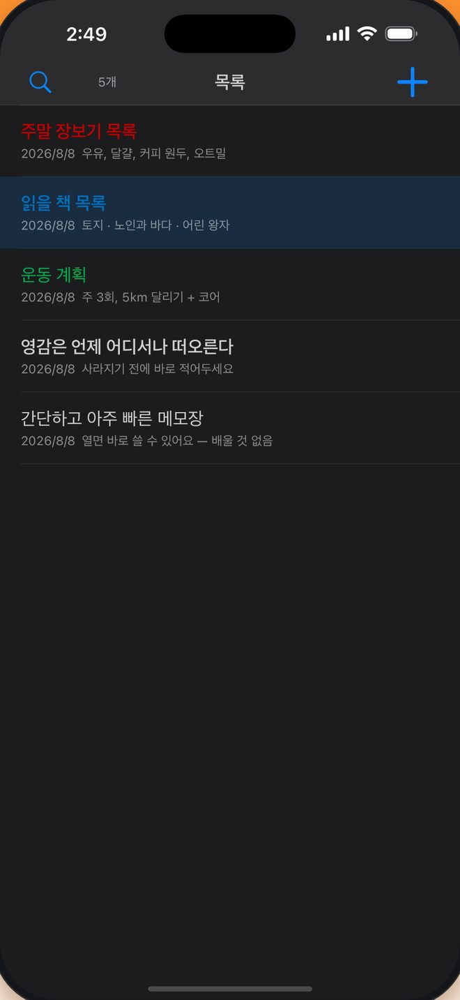
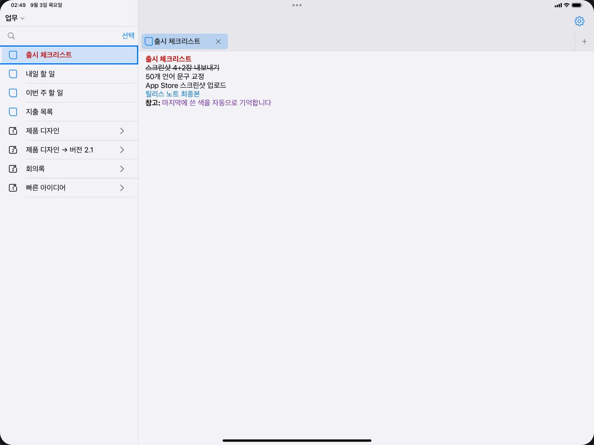

무료
유료 등급이 없어요. 글 쓰는 기능은 전부 들어 있습니다.
무료 · 아이폰과 아이패드 · 50개 언어
«열면 바로 쓰고, 쓰면서 정리하고, 한 글자도 잃지 않는» 메모 앱을 찾고 있다면 미니 노트가 바로 그 앱입니다.
공유
한눈에
유료 등급이 없어요. 글 쓰는 기능은 전부 들어 있습니다.
하나의 유니버설 앱, iOS 16.0 이상.
시스템 언어를 따라가고, 설정에서 직접 고를 수도 있어요.
기기 안의 데이터베이스에 저장하고 디스크에 쓸 때 암호화해요. 메모 내용은 업로드하지 않습니다.
굵게와 취소선도 편집 도구 막대에 있어 쓰면서 바로 눌러요.
노트북 → 그룹 → 메모, 원하는 만큼 깊게 나눌 수 있어요.
전화가 오거나 앱이 강제 종료되거나 배터리가 다 되어도, 저장하지 않은 내용은 자동으로 복구됩니다. 저장 버튼을 찾을 필요 없이 그냥 쓰세요.

«노트북 → 그룹 → 메모»로 관리하고, 복잡한 구조는 그룹을 여러 단계로 중첩하세요. 분류 없이 바로 적어도 됩니다.

리치 텍스트 편집기는 굵게, 취소선, 12색 팔레트를 제공하고 마지막에 쓴 색을 기억합니다. 제목은 본문 서식을 그대로 이어받아 목록 미리보기가 깔끔해집니다.
12색 · 굵게 · 취소선
마지막에 쓴 색을 기억해서, 다음 메모는 멈춘 그 색으로 바로 이어 쓸 수 있어요.

키워드만 입력하면 메모가 바로 걸러집니다

시스템 설정을 따라 자동 전환

iPad
왼쪽에 메모 목록, 오른쪽에 편집 화면과 기록 탭이 있어서 보는 일과 쓰는 일이 서로 방해하지 않아요. 키보드를 연결하면 앱 전체를 단축키로 다룰 수 있고요.

⌘N 새로, ⌘1–9 탭 이동, ⌃Tab 사이드바
키보드 단축키
자주 묻는 질문
네. 내려받기와 사용 모두 무료이고, 글 쓰는 기능 중에 유료로 잠긴 부분은 없어요.
아니요. 쓰는 동안 초안이 기기에 계속 저장돼요. 다시 열면 커서가 어느 줄에 있었는지까지 그대로 돌아옵니다.
아니요. 가입도 로그인도 없어요. 앱을 열고 한 번만 누르면 첫 메모를 쓸 수 있습니다.
아이폰과 아이패드, iOS 16.0 이상이면 됩니다.
사용하는 기기 안에, 디스크에 암호화된 로컬 데이터베이스로 저장돼요. 메모 내용이 서버로 올라가지 않습니다.
네. Safari나 다른 앱에서 '공유'를 누르고 미니 노트를 고르면 링크나 글이 받은 편지함에 들어가 새 메모가 됩니다.